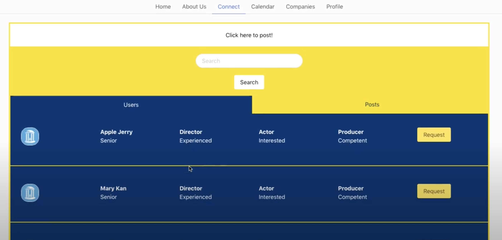

Switch It Up!
-
Modified a set of existing games to include switch-accessible controls for the motor impaired.
Explored the significant impact that accessibility can have on modern technology

Practiced Git workflow with team members to streamline collaboration
Languages, frameworks, and tools used:
- Javascript
- HTML and CSS
- React
Games are such a large part of being a kid - there's nothing quite like the feeling of solving a Rubik's cube, eating up little ghosts as Pacman, or finally swiping two tiles together to get 2048! We wanted to make this joy and excitement accessible for all, especially those children who aren't able to type or click as many buttons as the average kid. We chose to make a selection of games "switch accessible" meaning that the controls could be toggled with just two buttons - much like an "on/off switch". After modifying some of the game mechanics, we implemented two-on screen buttons (to toggle/select) as well as key controls (space/enter to toggle and select).
CatalogCarolina
Researched for and designed high-fidelity prototype in Adobe XD for alternate UI of UNC course database
Languages, frameworks, and tools used:
- Adobe XD
- Agile methodology
- Kanban boards
- As a UNC student, class registration is often a terribly stressful time. We often use external resources such as "RateMyProfessor" or "GradeToday" to find information needed to select the class we think is best for us. In this redesign, we decided to integrate that information within the UI of ConnectCarolina, so students could have easy access to the reviews and comments they need in order to make an informed decision.
Alpha Psi Omega
Creating a centralized hub for information across five UNC student theatre organizations.

Languages, frameworks, and tools used:
- Javascript
- HTML + CSS
- React
- I've spent a lot of college doing student theatre on the side, and throughout these experiences I've found that it's very hard to find A) find people for a production B) find resources for a production C) find general information about current opportunities. As historian of theatre honor society Alpha Psi Omega, I wanted to construct a website that would have all the information about all student theatre events in one place. My group and I are also in the process of implementing a database feature in which students can make profiles and display their interests and abilities - sort of like an internal student theatre-related Linkedin!
Exploring Unity
ARCADE ESCAPADE
Designing a retro-arcade themed game using lighting, textures, and 3d modeling.
TREASURE HUNTER
A simple VR game allowing the user to collect certain objects and "store" them below the waistline to gain points.